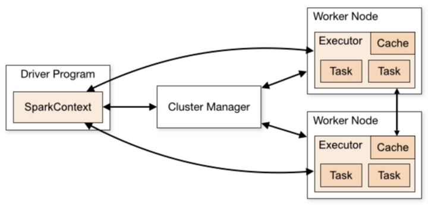

데이터 엔지니어링 스터디 내용정리 - Spark, Docker
개요
- 참여중인 데이터 엔지니어링 스터디에서 배우는 내용 정리
- 데이터 수집, 정제 : pyspark, airflow
- 저장 : elasticsearch
- 시각화 : kibana
1주차 수업정리
데이터 엔지니어링시 각 단계별로 필요한 주요 플랫폼
수업에서 사용할 플랫폼은 Bold표기(데이터 분석/정제를 자동으로 수행하는 workflow파이프라인 제작 예정)
- 언어 : SQL, Shell(터미널 사용), Java, Kotlin, Scala, Python
- 대용량 데이터 인프라 (HDFS[Hadoop File System])
- 데이터 수집 (Kafka, Logstash)
- 데이터 저장/질의 (MySQL, Hive, ES[Elastic Search, 저장], MongoDB)
- Elastic search는 검색엔진이어서 의아할 수 있으나, ELK스택(로그관리, 저장)할 때 많이 사용. kibana와 연동한 쉬운 시각화 가능
- 데이터 처리 (Hadoop MR[MapReduce], Spark, Flink(실시간 처리 용도), Spark Stream)
- Workflow (Airflow, Ooozie)
- 데이터(모델) 서빙 (GraphQL, REST API, 웹 개발)
- 데이터 시각화 (분석가가 더 많이해서 비중은 적음. 차트 종류와 특징, kibana)
- 기타: 분석 도구 (Zeppelin), 데이터 설계, 머신러닝, 보안
수업마다 왜 이 플랫폼을 선택했는지를 설명예정
스터디 방향
- 나의 플랫폼 선택이유를 설명할 수 있어야 함
- 수업마다 왜 이 플랫폼을 선택했는지를 설명예정
- 대용량 데이터 처리 파이프라인에 대한 이해(대용량 분산처리를 위한 Spark이해)
- 데이터에 따라 정제 과정, 데이터 구조 설계
- Fancy하지 않고 고민 오래하여 만들기
- Spark의 기본구조에 대한 이해 (+이직 등 목표라면 이론도 함께)
- Airflow DAG구현
- ES, Kibana : 위 항목보단 덜 중요하지만 기본구조는 이해
- 나의 플랫폼 선택이유를 설명할 수 있어야 함
스터디 준비
- Terminal(윈도우라면 WSL설치)
- Docker(ubuntu 20.04기준), Docker-compose
- Resource (메모리 등)
- IDE (Visual Studio Code 등)
수업목표
- 데이터를 주기적으로 수집하고 pyspark를 사용하여 정제
- 정제한 데이터를 저장, kibana로 시각화
- 자동 파이프라인 실행을 위한 Airflow job 생성
- 수업파일 git주소 : : https://github.com/kmin-z/de-2024.git
수업환경 관련 가이드사항
- Jupyter 관련 문제 발생시, 이미 8888포트 사용중인지 확인하고, 사용중이라면 변경
[향후 참고용] 문제에 대해 별도로 알아본 내역
ubuntu 내부에서 git을 설치한 후 clone할 수 있다
sudo snap install gh # git 설치 git clone https://github.com/kmin-z/de-2024.git # 레포 받기docker 실행시 sudo를 계속 사용해야하는 경우 : docker user관련 설정
- 공식문서 링크 : https://docs.docker.com/engine/install/linux-postinstall/
- 공식문서 링크 : https://docs.docker.com/engine/install/linux-postinstall/
WSL버전 문제 : 패키지 설치가 안되거나 symbolic link 등 많은 문제가 있었는데 WSL을 오래전에 깔아둔 문제였음 powershell에서
wsl --install로 재설치하여 해결
Spark 개요
- Data Warehouse vs Data Lake vs Data Lakehouse
- Data Warehouse → Data Lake → Data Lakehouse로 발전
Data Warehouse : (구조가 정해져있는)Structured data를 저장. BI나 Report를 생성Data Lake: (데이터가 다양해지며) Structured와 함께, Semi-structured, Unstructured(이미지나 사운드) Data도 저장- Structured data만 정제해서 Data warehouse로 저장(정제된 테이블데이터 생성)
- 기존처럼 BI, Report를 생성하기도 하고, Data Science를 위해 여러 유형의 데이터를 활용하기도 함. 또는 머신러닝 등도 진행
Data Lakehouse: 데이터를 덤프해두고, 따로 Warehouse 등을 저장해두지 않고, 사용자가 원하는 format으로 뽑아서 사용- Metadata, Governance Layer 등으로 데이터를 가져가기 쉬운 장치를 해둠. (과거유형의 정제해두지 않으면 데이터를 사용하기 어려운 것과 달리)
- 요즘의 트렌드(데이터를 저장해두고 사용하기 쉽게 해둠)
- 과거에는 정제해야하는 사람이 있었다면, 이 방법은 데이터를 붓는 쪽과 사용하는 쪽으로 나뉨
- 과거에는 정제해야하는 사람이 있었다면, 이 방법은 데이터를 붓는 쪽과 사용하는 쪽으로 나뉨
Distributed System(Spark이해하기 위해 알아야 하는 개념)- 간단한 실습이나 데이터 사이언스는 Local에서 가능했겠지만,
- 필요한 요소
- Resource management : 데이터를 적절히 분배하며 저장하는 Resource관리
- Scheduling : 여러 대의 서버가 Job을 어떻게 나누어 돌릴지
- Hadoop이 위 두가지 요소의 역할을 함 : DFS(Distributed File System)을 구축한 프로젝트임
- 큰 데이터를 어떻게 적절히 나누어 저장할지 등의 결정을 해줌
- 기존에는 대용량 데이터 처리를 위해 MapReduce를 많이 사용했는데, 구현과 테스트가 매우 힘듦(+Hadoop)
- 직접 해보면 MR Job은 잘 죽음
Spark: Hadoop의 한계를 벗어나기 위한 프로젝트
Spark: unified analytics engine for large-scale data processing- 데이터 수집, 저장, 모니터링 등 여러 과정 중 주로 데이터 처리를 위해 사용
- (데이터 처리에 사용하는 만큼)다양한 데이터 포맷, 처리 방법, 저장소 사용가능
- 다양한 high level tool 제공
- SQL, pandas API, MLlib(간단한 머신러닝)
- GraphX(그래프 알고리즘을 분산으로 돌려볼 수 있음)
- Structured Streaming(실시간 데이터 처리)
- 다양한 high level tool 제공
- Spark History
- 2009년 캘리포니아대 버클리캠퍼스 AMP Lab에서 개발한, MapReduce 단점개선 프로젝트
- 2013년 Apache 프로젝트에 등재됨
- 자세히 설명된 위키피디아 내용 : https://en.wikipedia.org/wiki/Apache_Spark
Spark Cons(장점, 선정한 이유로서 잘 기억하기)- 빠른 속도 (Logistics regression기준 Hadoop보다 100배 빠름)
- 메모리에 데이터를 올려서 사용하는 플랫폼이므로, 무조건 디스크를 쓰는 Hadoop보다 빠름
- 사용하기 편리함
- 분산처리를 고려한 처리방식때문에 헷갈릴수는 있으나, SQL 등 친숙한 사용법
- 다양한 기능 제공(Generality)
- SQL, Spark Streaming, MLlib 등 다양한 어플리케이션 제공
- 다양한 Cluster, File system과 연동가능
- Cluster마다 관리모듈이 다른데, Yarn, Mesos 등 다양한 Cluster를 붙여쓸 수 있는 플러그인 제공
- Option에 넣으면 해당 Cluster에 맞는 다양한 처리를 해줌
- File system과 연동가능 : HDFS, Alluxio, Cassandra 등
- Cluster마다 관리모듈이 다른데, Yarn, Mesos 등 다양한 Cluster를 붙여쓸 수 있는 플러그인 제공
- 일반적인 작고 Local에서 돌리는 작업이라면 오히려 빠른 부분을 잘 못느낄 수 있음
- 분산처리를 위한 추가적인 작업때문에 오히려 늦다고 느낄 수도 있음
- 다만 대용량데이터를 다룰 때는 체감할 수 있다(다른 플랫폼은 돌아가지조차 않을 수 있음)
- 빠른 속도 (Logistics regression기준 Hadoop보다 100배 빠름)
- Spark의 구조
- Driver(1개)와 Worker(n개)로 구성
- Cluster manager는 Spark의 요소는 아님
- Driver와 Worker는 Cluster manager를 통해 소통하며 일을 함
Driver- 전체 Job을 관장하는 Master의 역할
- SparkContext : Spark 전체의 환경(Environment)를 관장
- 항상 Spark Application작성시에는 SparkContext를 먼저 생성하는 코드를 넣음(Driver에 SparkContext가 떴다면 initialization이 끝난 것)
- 이유는 SparkContext가 떠야 Spark가 시작될 수 있음
- 항상 Spark Application작성시에는 SparkContext를 먼저 생성하는 코드를 넣음(Driver에 SparkContext가 떴다면 initialization이 끝난 것)
Worker- 실제로 작업을 하는 역할(Node). Executor(분산되어 할당된 여러 Task를 돌려줌) + Cache
Cluster manager- Spark의 역할은 오로지 데이터의 처리인데, Task를 나누고 분배하려면 각각 Node의 상황 등을 파악해야 함
- 가용성과 Task양 등은 Yarn resource 등의 Cluster manager가 알 수 있으며, Spark는 Resource management를 해주지 않음
- Cluster의 종류를 옵션에 적으면, Cluster manager에 맞게 플러그인을 제공.
- Cluster가 가용성 등의 정보를 제공해 Driver와 소통하여 Task를 나눌 수 있게한다 
- Spark Context
- 처리의 역할만 하고, 데이터를 읽고 Cluster를 관리 등은 플러그인을 제공한 타 기능이 실행
- 다양한 데이터 Source에 연결한 뒤, 데이터는 Job, Task가 나뉜 것에 따라 분배가 되어야하는데 Spark가 직접하지 않음
- Hadoop이 이미 Distributed file system을 잘 구축해두었으므로(데이터 처리가 느리지만), 그대로 가져와서 사용
- Spark를 설치해보면, 자동으로 HDFS가 자동으로 함께 설치됨(Dependency가 걸려있음)
- 데이터 처리용도 외의 데이터를 자르거나 Job을 분배하는 처리는 다른 플랫폼을 활용한다
Spark Environment 설정(Docker사용)
클러스터의 무료 버전은 등록/제약(몇개월이내 데이터량) 등의 문제로 Local(Docker)에서 실습예정
Docker어떤 환경을 쓰더라도, 다른 OS나 패키지 등의 상황에 대응하기 어려움 (→ 어떤 환경에서든 Application이 돌아갈 수 있도록 도와주는 Docker)
Virtual Machine이 OS단위 구현인 것과 달리, 하나의 OS에서 Docker엔진이 Software단위로 패키징
- OS커널은 다른 컨테이너와 공유할 수 있으며, 각 컨테이너는 격리된 프로세스로 실행
수업은 Ubuntu를 활용하여 Docker Engine 설치
- https://docs.docker.com/engine/install/ubuntu/
- Ubuntu설치 : https://ubuntu.com/download/desktop
- Ubuntu설치 Tutorial : https://ubuntu.com/tutorials/install-ubuntu-desktop#1-overview
Docker를 설치했다는 것은 Docker Engine을 설치했다는 것이고(하단그림 가로), 이제 위의 App(하단그림 세로)을 띄워야 함
- 만들어져있는 App을 사용할 예정(Spark Driver, Spark Executer, Airflow, ES, Kibana, Jupyter 등)
- 만들어져있는 App을 사용할 예정(Spark Driver, Spark Executer, Airflow, ES, Kibana, Jupyter 등)
Docker파일(컨테이너화 하는 파일) : 내가 원하는 소프트웨어를 어떤 환경/버전/라이브러리로 설치할 것을 정의하는 파일
- 하단 그림을 해석하자면, airflow 2.7.1, Python 3.11버전을 사용하고 싶음
- From에서 제공하는 이미지를 가져와서 (airflow에서 Docker이미지를 제공함[Docker쓰는 경우가 많아서])
- root 권한을 사용하여 apt-get을 update 후 python3-dev 등을 설치
- JAVA_Home세팅을 내가 설치한 java-11-openjdk-arm64로 해줌
- airflow 유저네임으로 바꿔서
- airflow에서 사용할 python패키지 (apache-airflow 등) 설치
- From의 이미지만을 사용하면 원하는 JDK를 사용하기 어렵고, 파이썬 패키지가 없는 상태임
- Docker파일은 정의된 config파일로, 이것을 Docker이미지로 build하게 됨(build를 하면 이미지가 나옴)
- docker build명령어로 config파일을 사용
- -t : 이름지정
- -f로 파일명을 지정하지 않고(-f Dockerfile 등), .을 찍으면 현재 디렉토리기준으로 Docker파일을 만듦
docker build -t airflow-python:20240805 . - 수업에서는 Docker-Compose를 사용할 예정으로 별도의 build를 진행하지 않음
- docker build명령어로 config파일을 사용
- 하단 그림을 해석하자면, airflow 2.7.1, Python 3.11버전을 사용하고 싶음
Docker이미지 : 컨테이너 App이 올라가기 전, 만들어져있는(올라가기 직전의) 명세
Docker명령어 사용실습
docker images # Docker 이미지를 볼 수 있음image-3.png docker container ls # 올라와있는(up되어있는) Docker container들을 볼 수 있음 # docker container까지만 치면 사용가능한 명령어를 보여줌
Docker Compose- Docker 컨테이너 설정들을 한번에 관리하기 위한 기술 (docker설치시 같이 설치됨)
- docker에서 실행(설치)하도록 하는 airflow제공 가이드 : https://airflow.apache.org/docs/apache-airflow/stable/howto/docker-compose/index.html
- airflow는 여러 기능이 있으므로 컨테이너도 여러개 있음
- spark를 기준으로 이해하자면, Driver를 뜨고 Worker(Node)를 뜨는 등 순서에 따라 진행하고, 모든 Node가 되는지 확인까지 compose로 진행
- 하단 그림을 기준으로
- Services에 여러 컨테이너를 띄울 것(spark-master, spark-worker)
- spark-worker의
depends_on: spark-master : spark-master 뜬 다음에 진행하겠다는 의미
- compose를 사용하지 않는다면 컨테이너별로 명령어를 따로 쳐야하는 불편함. 이를 막을 수 있도록 docker-compose를 사용
- docker-compose.yml 파일에 정의해두고 사용
Docker Commands- 기본 커맨드
- docker-compose up -d (start all the containers)
- -d : 백그라운드에서 실행(터미널이 끌 수 없는 상태로 실행되는 것을 방지)
- docker-compose down (stop all the containers)
- 참고 : stop되지 않은 컨테이너는 rm이 불가하다
- docker ps (check the containers)
- start된 컨테이너를 보여줌
- docker container ls (stop된 컨테이너도 모두 뜸)
- docker container ls (stop된 컨테이너도 모두 뜸)
- start된 컨테이너를 보여줌
- docker-compose up -d (start all the containers)
- 디버깅이나 오류 상황등에서 사용하는 커맨드
- docker logs
(check container logs) - 로그를 컨테이너별로 볼 수 있다
- docker stop
(stop specific docker container) - docker rm
(remove specific docker container) - docker container ls -a (check all the containers including stopped ones)
- docker images (docker 이미지 목록)
- docker run –options
(run docker image) - docker run -it de-2024_scheduler scheduler (-it 옵션으로, de-2024_scheduler를 실행)
- 이름을 지정하지 않으면 임의의 이름을 부여 (-name=)
- docker run -it minz95/de2024:jupyter /bin/bash
- container마다 /bin/bash가 존재함을 단순 참고
- docker run -it de-2024_scheduler scheduler (-it 옵션으로, de-2024_scheduler를 실행)
- docker rmi
(remove docker image) - docker rm 등은 실제 이미지가 지워지는게 아니며, docker rmi로 삭제
- docker system prune (remove all the orphans in docker system)
- cache 등 용량이 모자라면 사용(문제가 된 컨테이너가 계속 실행중인 경우 메모리가 쌓여있을 수 있음)
- docker start
- container 실행
- docker exec -it
/bin/bash (execute docker container) - container에 들어가서 볼 수 있음
- exit를 입력하여 종료 가능
- docker logs
Docker에서 Spark-Master를 잘 실행했다면,
http://localhost:9090/를 입력하여 확인 가능- 하단 yml파일에 ports세팅을 해두었기 때문에 9090으로 접속 가능
docker-compose.yml 파일
services: spark-master: <<: *spark-common hostname: spark-master command: bin/spark-class org.apache.spark.deploy.master.Master expose: - "7077" ports: - "9090:8080" # UI - "7077:7077" # Master와 직접연결 - "4444:4040"
- 기본 커맨드
직접 Spark를 설치한다면 필요한 사항
- Java 8 이상이 설치된 Linux 서버
- Spark 다운로드
- Spark 홈페이지 -> Download 페이지
- 원하는 버젼 선택 후 다운로드
- 스파크 설치, 압축 해제
- 각자의 환경에 맞는 config 설정하기
- 링크 : https://spark.apache.org/docs/latest/configuration.htm
Submitting Spark Job
- Spark Application
- Build-in Application : Spark에서 기본 제공
- User-Built Application : User가 작성
- Spark Application 작성순서
SparkContext(SparkSession)생성
spark = SparkSession.builder.getOrCreate()데이터 모델 생성(DataFrame/Dataset, RDD)
df = spark.read.format("csv").option("header", True).load(csv_file)데이터 처리 : Where절 등 사용
result = df.withColumn('rate', col("rate").cast(DoubleType()))결과 파일 처리
result.show(3, false)
- Spark Application 실습 (Word-Count)
과정
- 서버 준비
- 파일을 나누어 서버에 분산시켜 전송 (HDFS가 진행)
- 프로그램 빌드 (내가 진행)
- 빌드한 프로그램을 서버에 전송 (Cluster Manager가 진행)
- 서버 별로 실행 결과 기록 (Spark가 진행)
- 모든 결과를 더해서 최종 결과 추출 (Spark가 진행)
코드
from pyspark.sql import SparkSession spark = ( SparkSession.builder .appName("word-count") .master("local") .getOrCreate() ) sc = spark.sparkContext text = "Hello Spark Hello Python Hello Docker Hello World" words = sc.parallelize(text.split(" ")) wordCounts = words.map(lambda word: (word, 1)).reduceByKey(lambda a, b: a + b) for wc in wordCounts.collect(): print(wc[0], wc[1]) spark.stop()
- RDD(Resilient Distributed Dataset)
위의 실습코드의
parallelize로 사용한 것이 RDD라는 모델분산 데이터 모델
MapReduce와 비슷한 역할 (MR용도에 최적화된, 그러나 하둡보다는 발전한)
How를 기술 (데이터를 어떻게 조작할지를 기술)
rdd.map((_., 1L)) rdd.reduceByKey(_ + _)- 참고 : pandas DataFrame은 How가 아닌 What을 기술(어떤 작업을 할지 컬럼별로 기술)
- RDD는 컬럼이 없는 데이터 모델
- RDD는 컬럼이 없는 데이터 모델
- 참고 : pandas DataFrame은 How가 아닌 What을 기술(어떤 작업을 할지 컬럼별로 기술)
- Cluster Manager
- Node 상태를 체크해서 작업을 분배, 죽은 Node를 제외하는 등 기능 필요
- Driver (Spark Context가 뜨는 Node)
- 백그라운드 프로세스와 정보들 관리
- Cluster Manager와 관계없이 동작 (Cluster Manager가 보는 상태는 Executor의 상태, Driver를 좌우하지 않음)
- Cluster Manager와 정보는 공유함
- Executor
- (Cluster manager의)Scheduler로부터 task를 할당받아 실행하는 역할
- (Cluster manager의)Scheduler로부터 task를 할당받아 실행하는 역할
Spark-submit- Spark실행때는 파이썬 명령어로 실행할 수 없음 (python test.py 등)
빌드한 프로그램을 각 서버(띄운 Worker에서 실행하도록) 명령을 보내주어야 함
이 내용이 Built-in application 중
spark-submit임spark-submit --master=<yarn|mesos…>
Spark-submit을 하면 전체 Worker node에 job을 분배해줌- 코드 샘플 (수업은 Local환경임을 참고)
spark-master : yml파일 참고하여 작성함
- spark-master : hostname
- :7077 : master와 연결할 ports
spark://spark-master:7077docker-compose.yml
services: spark-master: <<: *spark-common hostname: spark-master command: bin/spark-class org.apache.spark.deploy.master.Master expose: - "7077" ports: - "9090:8080" # UI - "7077:7077" # Master와 직접연결 - "4444:4040"
- Spark실행때는 파이썬 명령어로 실행할 수 없음 (python test.py 등)
Spark Context- Spark Context를 생성해야 Spark Task를 실행할 수 있음
- Initialize Environment의 역할
- Spark Context는 매번 생성하므로 공통 함수가 있으면 편리함
- Spark Context를 생성해야 Spark Task를 실행할 수 있음
Spark Session- Spark Session은 Spark Context를 코딩하기 쉽게 래핑해둔 것으로 이해
- Spark Context가 Spark Session에 들어있다
- Low level 작업(RDD 등)을 할 때는 SparkContext를 사용
- SparkContext도 Spark Session을 통해 접근할 수 있음
- Spark Session은 Spark Context를 코딩하기 쉽게 래핑해둔 것으로 이해
- Spark Submission Command
- [예시] 하단 코드를 기준으로
-itoption으로spark-submit을 실행--masteroption으로 spark-master의, 7077로 지정<python-app-path>안에 파이썬 파일명- 파이썬 파일이 파라미터를 받는다면
<data-path>을 지정
docker exec -it de-2024-spark-master-1 spark-submit --master spark://spark-master:7077 <python-app-path> <data-path> - [방법1] docker에서 실행 (실습환경 기준)
- jobs에 대한 매핑이 이미 되어있기에 가능함을 참고 (yml파일의 x-spark-common의 volumns 부분)
- 아래 파이썬 파일(word-count.py)은 파라미터를 받지 않음
docker exec -it de-2024-spark-master-1 spark-submit --master spark://spark-master:7077 jobs/word-count.py - [방법2] 컨테이너에 들어간 후 실행 (실습환경 기준)
- 아래 파이썬 파일(hello-world.py)은 파라미터를 받음
# 해당 컨테이너에 들어감 docker exec -it de-2024-spark-master-1 /bin/bash # 파일이 있는 폴더로 들어감 cd jobs # 해당 폴더에서 직접 실행 spark-submit --master spark://spark-master:7077 hello-world.py ..data/movies.csv
- [예시] 하단 코드를 기준으로
Pyspark
- Pyspark는 Main은 아님
- Spark는 Scala로 구현되어있어, 신기능은 Scala로 먼저 개발됨
- Python으로 포팅되기까지 시간이 걸림
- Scala가 필수는 아님
- Scala는 함수형 프로그래밍에 대한 부담이 큼
- Spark 자체가 다양한 언어를 지원하여, 간단한 처리로는 어떤 언어도 가능
- 단 아래의 경우는 Scala가 필요함
- 최신 Spark API가 필요하거나 Customizing이 필요한 경우
- 성능최적화나 오픈소스 등을 기여하고자 할 때
- Spark 내부구조를 분석해서 디버깅해야할 Case가 있을 때
Dataset
[참고]실습 데이터 폴더구조
- dags : airflow에서 사용
- data : 데이터를 넣고 사용
- es-data : elastic search에서 사용
- jobs : 주로 사용할 메인코드, spark 코드 사용
- logs : airflow 로그용 디렉토리
- notebooks : jupyernotebook 파일
- resources : elasticsearch jar파일
과제 데이터셋 고민
- Yahoo Finance API
import yfinance as yf msft = yf.Ticker("MSFT") msft.info # get historical market data hist = msft.history(period="1mo") # show meta information about the history (requires history() to be called first) msft.history_metadata데이터의 Schema 확인하는 샘플코드
df = spark.read.csv('') df.printSchema()
Spark Materials
- https://spark.apache.org/docs/latest/
- https://databricks.com/blog/category/engineering/spark
- spark 를 이루는 기반 기술에 대한 공부 (java I/O, python, Hadoop)
Copyright © 2024 Kibok Park All rights reserved.